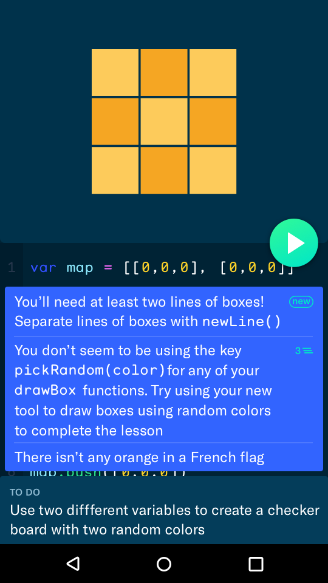
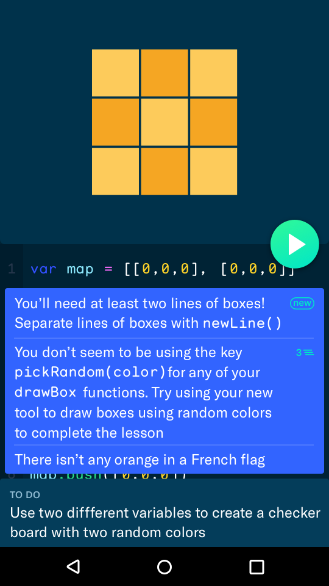
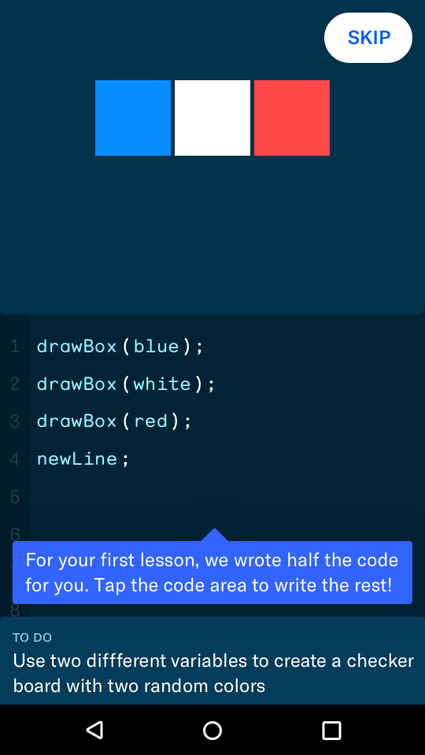
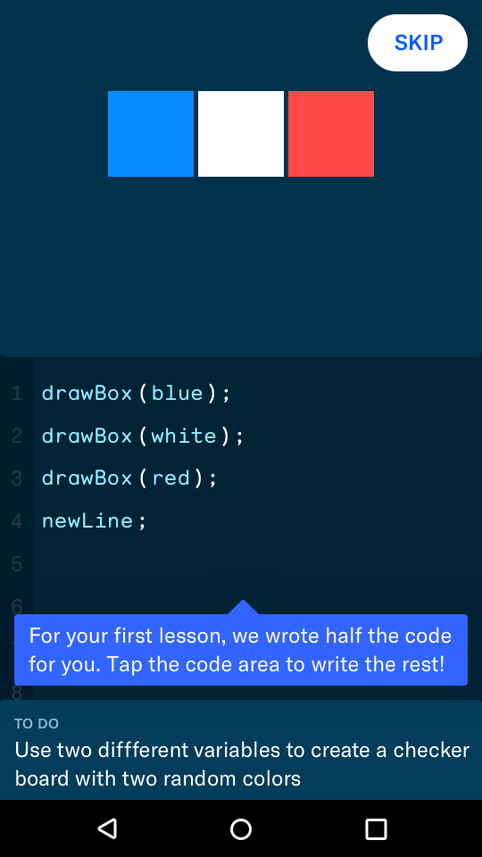
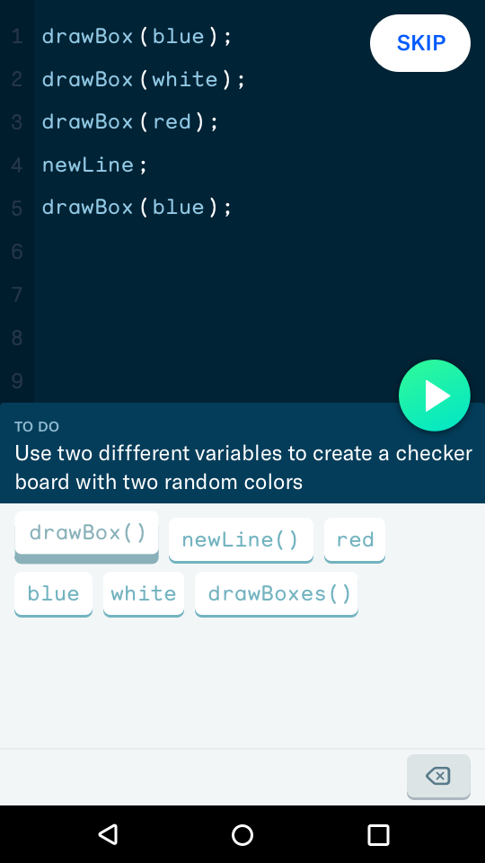
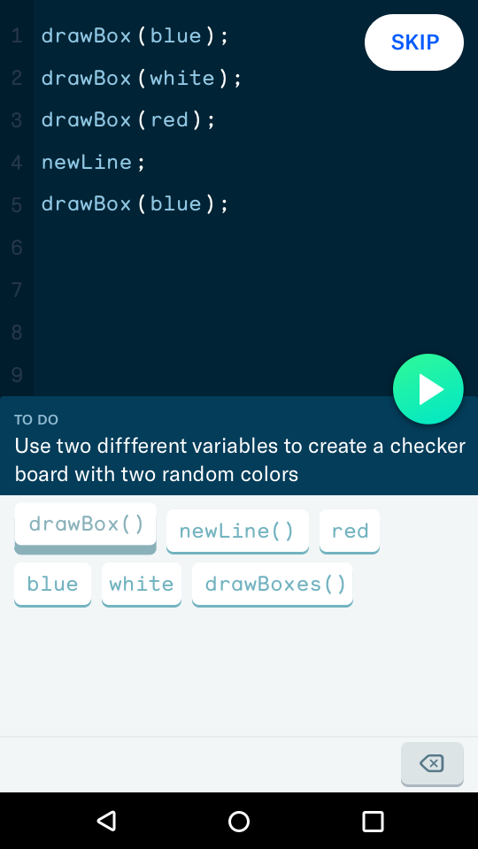

Meta
The Problem
Grasshopper brings coding out of schools and into the hands of everyday people with a mobile code learning app. Though unconventional, a mobile app can reach a far broader audience, especially among the young, under-privileged, and learners in developing countries whose only computing device is often an Android device.
For students to learn practical programming skills, Grasshopper needs to work with a real language (JavaScriptTechnically, TypeScript because Google :P) inside of a fully functional development environment. We needed an interface that is at once powerful and easy to understand for first time coders — all it integrated into a exercise regime that kept pace with the students' growing comfort with code. In short, our problem broke down to four main challenges:
- Miniaturizing fully-functional code editor
- Providing easy accesss to terminal, docs and the tool ecosystem
- Onboarding users into a complex new environment
- Structuring lessons in a way that keeps pace with student learning
My Roles
I was the sole designer for most of the project, while Fuzzco and Rob provided branding and creative direction support. This means my responsibilities spanned across the board:
- Interaction design
- Visual design
- Motion design
- PrototypingPrinciple, Framer, After Effects, code—whatever was appropriate for the fidelity we were working at.
Throughout the project, I managed the day to day relationship with client: leading most of our design reviews and working with engineers to get implementation right.
Outcome
- The project is continuously funded by Area120, with a launch set for Jan 2018
- 10k download on play store while in stealth
- 3 project referrals from happy client
Design challenge 1
Miniaturizing fully-functional code editor
Goals and constraints
Our first task was to shrink a basic code editor into a mobile interface. This meant figuring out the basic functionalities of writingThankfully, the people at Scratch already invented a great visual programming system that lends itself well to touch interfaces. We just had to adapt it from desktop to mobile. , navigating the code base, moving things around and deleting. I focused my explorations around the following principles:
- Allow freedom to write any desired code while also guiding the user towards syntactical correctness
- Don't break writing and thinking flow with interactions requiring high precision
Early Explorations
Because there had been so little prior work in this space, we knew early on that we needed to quickly mock up a large numbers of variations to figure out the boundaries of our solution space. What you see here are some of the many crazy ideas we started from.
Final Design
Overview of some input features
- Scratch-style code pills for easy input on mobile and typo guardrails
- Disabling syntactically inappropriate keys to prevent
- Emoji-style tabbed keyboard
 emoji-style keyboard to accommodate large sets of keys
emoji-style keyboard to accommodate large sets of keys - Custom syntax highlighting tied to tabbed keyboard for easier memorization
- Automatic switching to QWERTY when relevant.
Overview of some edit features
- Automatically select a unit of code instead of letter by letter selection reduces need for precision and protects against fragment errors
- Prominent undo and contextual redo + reset allows safe experimentation
- Touch target size hacking to make lines more selectable
Critique
- Still an overwhelming amounts of keys
- No order within tabs. Hard to blind type
- Not obvious what will selected next after deleting
- Generally needs more support for power users in the future
Design Challenge 2
Terminal, docs and the tool ecosystem
Goals and constraints
Programming is more than writing code. Developers work with a whole ecosystem of terminals, references, and resources often spanning multiple screens. We wanted to provide a similar tool belt for our learners.
- Debugging and reading docs is part of the process. Switching to these views should feel less like being stuck and more like a step towards the right solution
- Users will be switching views often. Maintain context and orientation of views so users can find their way back.
Early Explorations
The first thing we needed to figure out was the relationship between these views. Where are they situated in relation to each other? How much can we overlay the views for easy comparison before it got too busy? Did we want to deal with landscape orientation? Early explorations helped us answer these questions.
Final Design
All of our final designs are centered around maintaining context and clear directions. For example, the instructions are minimized into a single line prompt so students can always be referencing their goal, even while coding. We also consistently use the bottom for help, debugging and hints while the top is reserved exclusively for terminal/output areas. This helps students form a clear menta map of where views live.
Overview of some output/terminal features
- Takes only half the screen so you can see the relationship between code and output
- Uses a play button, a concept that is familiar with non-techies
Overview of some instructions/docs features
- Objective always visible
- Modal is low friction to bring up so you can quicly tab back and forth
Overview of some debugging features
- Feedback is displayed contextually so you can see what it is referring to.
- New and repeat icon help visually distinguish important feedback
 

Critique
- Missed opportunity: Bret VictorHad we more time, we could have introduced a more visual way of programming, as outlined in Bret's paper: Learnable Programming. style live data structure visualization
Design Challenge 3
In-Lesson Onboarding
Goals and constraints
- Learning to code is hard. Learning the UI should not compound the difficulty
- Practice is the best way to learn. Teach the UI using the UI
- Make sure students who are more advanced can skip
Final Design
Learning by doing is at the core of the Grasshopper teaching philoshophy. Given that tool proficiency was an integral part of learning to code, we applied the same practice driven education to the onboarding. To do this, we pared down the tool set to only the essential feautures needed to complete the first lesson and taught only those. As the user got more familiar with coding, we introduced new UI and tools as new lessons required them. This reduced thel upfront learning burden.
 



 



Design Challenge 4
Lessons Structure Design
This part of the app is actively being reworked. Check back later for updates. In the meantime, check out some of the designs from our last iteration.
Goals and constraints
- Celebrate success and accomplishments
- Express brand identity
- Give students a choice of what they want to do next